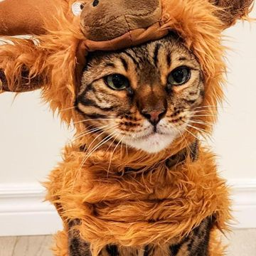

--:--
Office IDNo. 0001

Pixel
Debbie's cat
- Department
- Naps and quality control
- Desk
- Debbie's, the free end
- Known for
- Knocking things off desks
- Access
- Every room, no badge needed
Missions
DemoMissions race
Every approved photo, in order. Points go to everyone in the photo.
- Personality
Ask
Drag to rotate. Tap anyone to chat with them.
Live
Loading the team…
The 3D office needs WebGL. Try a recent version of Chrome, Edge, Safari or Firefox.